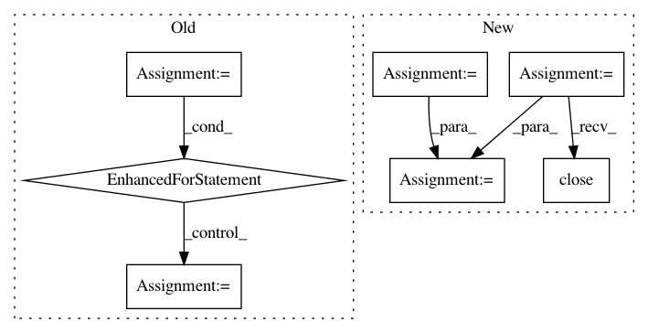

cce4382f73d0976fb94b003949acd668377a0869,torch_geometric/utils/geodesic.py,,geodesic_distance,#Any#Any#Any#Any#Any#Any#,10
Before Change
dest = None if dest is None else dest.detach().cpu().to(torch.int).numpy()
outs = []
for i in range(len(src)):
s = src[i:i + 1]
d = None if dest is None else dest[i:i + 1]
out = gdist.compute_gdist(pos, face, s, d, max_distance * norm) / norm
out = torch.from_numpy(out).to(dtype)
outs.append(out)
out = torch.cat(outs, dim=0)
if dest is None:
out = out.view(-1, pos.shape[0])
After Change
dest = None if dest is None else dest.detach().cpu().to(torch.int).numpy()
pool = mp.Pool(mp.cpu_count())
outs = pool.starmap(
_parallel_loop,
[(pos, face, src, dest, max_distance, norm, i, dtype) for i in range(len(src))]
)
pool.close()
out = torch.cat(outs, dim=0)
if dest is None:
In pattern: SUPERPATTERN
Frequency: 4
Non-data size: 7
Instances
Project Name: rusty1s/pytorch_geometric
Commit Name: cce4382f73d0976fb94b003949acd668377a0869
Time: 2020-04-03
Author: j-magnusson@t-online.de
File Name: torch_geometric/utils/geodesic.py
Class Name:
Method Name: geodesic_distance
Project Name: rusty1s/pytorch_geometric
Commit Name: 17e56b9100275068c7ad0e74c0bf247866da846f
Time: 2020-05-31
Author: j-magnusson@t-online.de
File Name: torch_geometric/utils/geodesic.py
Class Name:
Method Name: geodesic_distance
Project Name: HazyResearch/fonduer
Commit Name: 6ca60969b6893268680d4386e2f22cdc3bc3c405
Time: 2018-09-05
Author: jrausch@inf.ethz.ch
File Name: src/fonduer/utils/udf.py
Class Name: UDFRunner
Method Name: apply_mt
Project Name: okfn-brasil/serenata-de-amor
Commit Name: 7e4f1f5aa62d962629adb53bea7c58c9070261c1
Time: 2016-11-25
Author: cuducos@gmail.com
File Name: src/fetch_sex_places.py
Class Name:
Method Name: